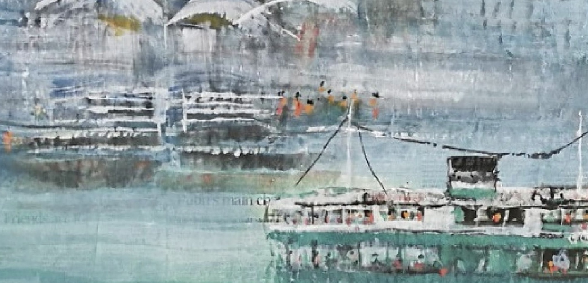
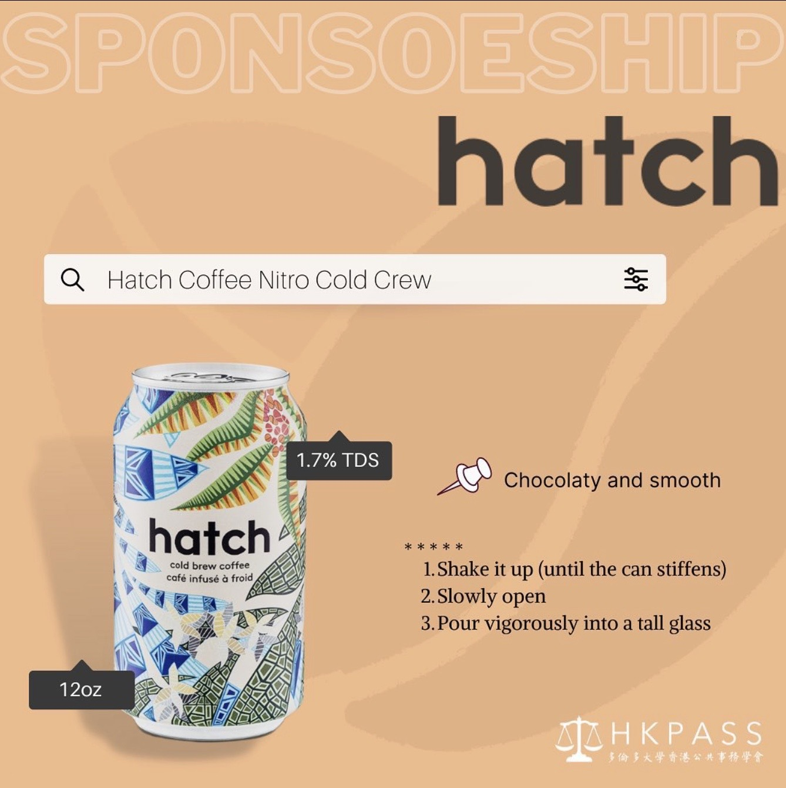
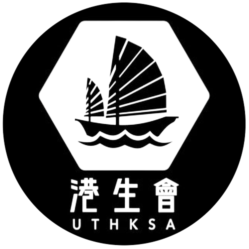
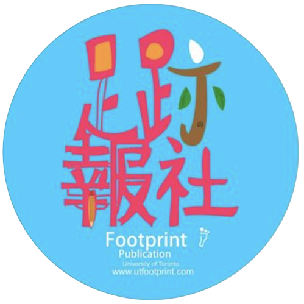

<!DOCTYPE html>
<html lang="en-US"></html>
<head>
    <title> UTHKPASS </title>
    <link rel="icon" type="image/x-icon" href="favicon.ico">
    <meta name="viewport" content="width=device-width, initial-scale=1.0">
    <style>
        body {background-color: whitesmoke; font-family:'Times New Roman', Times, serif;}
        a {padding: 2px 1px 0}
        a:link {color:black; text-decoration-color:darkred;}
        a:visited {color:black; text-decoration-color:darkred; border-bottom: 1.5px solid darkred;}
        a:hover, a:active{color: darkred; text-decoration-color:darkred;}
        .intro {
            font-size: 400%;
        }
        .subintro {
            font-size: 250%;
            padding-left: 10%;
            padding-bottom: 5%;
            padding-right: 30%;
        }
        .main {
            font-size: 150%;
            padding-left: 10%;
            padding-bottom: 10%;
            padding-right: 25%;
        }
        .notes {
            font-size: 110%;
            padding-left: 10%;
            padding-bottom: 1%;
            padding-right: 25%;
        }
        ul {
            list-style-type: none;
            margin: 1%;
            padding-right: 5%;
            padding-top: 2.5%;
            overflow: hidden;
        }
        li {
            font-size: 125%;
            float: right;
        }
        li a {
            display: block;
            color:maroon;
            text-align: center;
            padding: 16px;
            text-decoration: none;
        }
        li a:hover {
            color:maroon;
            text-decoration: none;
            border-bottom: 2.0px solid darkred;
        }
        .bg {
        opacity: 0.5;
        position: absolute;
        left: 0;
        top: 0;
        width: 100%;
        height: auto;
        }
        td a {
            text-decoration: none;
            color: black;
        }
        td a:hover {
            text-decoration: none;
            color: black;
        }
    </style>
</head>
<body>
    
    <ul id="home">
        <li><a href="joinus.htm" title="加入我們"> 加入我們 </a></li>
        <li><a href="publication.htm" title="刊物"> 刊物 </a></li>
        <li><a href="aboutus.htm" title="關於我們"> 關於我們 </a></li>
        <li><a href="#home" title="主頁"> 主頁 </a></li>
    </ul>
    <br><br>
    <div>
        
    </div>
    <br><br>
    <div class="subintro"> 
        最新
    </div>
    <div class="main">
        <table>
            <tr>
                <td style="background-color:rgba(230, 214, 214, 0.217)">
                    <a href="blueisland.htm">
                        
                    </a>
                </td>
                <td style="background-color:rgba(230, 214, 214, 0.217)">
                    <a href="hatchsponsor.htm">
                        
                    </a>
                </td>
            </tr>
            <tr>
                <td style="background-color:rgba(230, 214, 214, 0.217)">
                    <a href="blueisland.htm">
                        <p style="text-align: center;">【電影分享：憂鬱之島】</p>
                        <br>
                        <p style="font-size: 18px; padding-left: 16px; padding-right: 8px;">「到底時下年輕人是怎樣看待這個城市的未來？然而他們面對著這困局又有什麼見解？」 便是電影介紹中留下來的最後兩個問題。
                        <br><br>
                        這部獨立紀錄片，一花便花了五年時間製作。由最初探訪經歷過文革的前人對現今社會局勢的反思，到後期在製作期間遇到了2019年社運，導演也決定紀錄是次社運，找來了一班演員和政治人物，從當代年輕人自身所經歷的去代入前人的遭遇。
                    </p>
                    </a>
                </td>
                <td style="background-color:rgba(230, 214, 214, 0.217)">
                    <a href="hatchsponsor.htm">
                        <p style="text-align: center;">【2022 迎新日】</p>
                        <br>
                        <p style="font-size: 18px; padding-left: 16px; padding-right: 8px;">「UTHKPASS 2022 Orientation Day喺大家嘅參與之下完滿結束，希望大家玩得開心！👏🏻
                        <br><br>
                        人體有60-70%係水份，而身為uoft嘅學生，唔知大家攝取嘅水份有幾多係咖啡？
                        </p>
                    </a>
                </td>
            </tr>
        </table>
    </div>
    <div class="notes">
        If you have any questions or concerns, feel free to contact us at <a href="mailto: uthkpass@gmail.com"> uthkpass@gmail.com </a> or via our <a href="https://www.instagram.com/uofthkpass/?hl=en"> Instagram </a> and Facebook page!
    </div>
    <div class="notes">
        如有任何問題，歡迎隨時用<a href="https://www.instagram.com/uofthkpass/?hl=en"> Instagram </a>/Facebook 私訊本會，或擲函至<a href="mailto: uthkpass@gmail.com"> uthkpass@gmail.com </a> .
    </div>
    <br><br>
    <div class="notes">
        相關團體
        <br><br><br>
        <table>
            <tr>
                <td><a href="https://www.instagram.com/ut_cdc/"></a></td>
                <td><a href="https://www.instagram.com/uthksa/"></a></td>
                <td><a href="https://www.instagram.com/uthksc/"></a></td>
                <td><a href="https://www.instagram.com/utfootprint/"></a></td>
            </tr>
        </table>
        <br>
        贊助商
    </div>

</body>